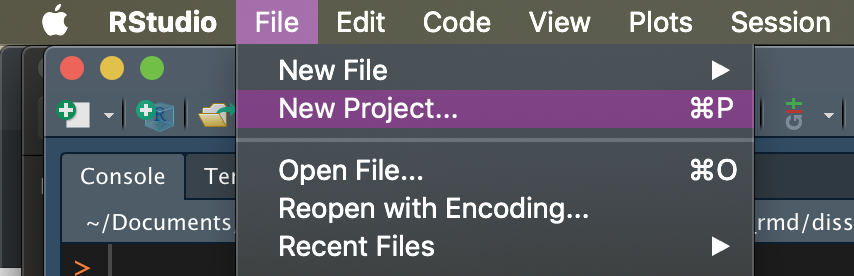
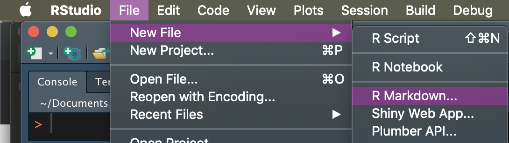

Chapter 5 Exercises
5.1 Exercise 1. Getting started with RMarkdown
Make an R Project
R Projects make project management really simple. For every new project you embark on, creating a new .RProj file. Open that .RProj file whenver you’re ready to work on that project, and it will:
- Give you easy access to the directory structure (no need to define a working directory)
- Restore your last RStudio session from that project (no need to reopen files)
- Give you access to your R history from your last session
- NB: these preferences can all be tweaked

- Follow the prompts to create a project in a new directory for this workshop
Make a new .Rmd file

These are the components of your RMarkdown file:

We won’t go into this in too much detail
Knit your document

Try it as a…
- Word document
- Html document
- PDF document
More resources
- RStudio intro to RMarkdown
- R-Ladies #LdnOnt presentations
- Intro to RMarkdown
- RMarkdown for summary reports and journal articles (also see more specific resources on the last slide)
Back to Section 3
5.2 Exercise 2. What’s in a chapter? Lite version
Open 01_Intro.Rmd and do the following:
- Write some text
- Insert an R chunk that contains some simple R code
- Knit to HTML
E.g.,
x = 3
x^2## [1] 9Back to Section 4.2
5.3 Exercise 3. What’s in a chapter? Heavy-duty version
Open 03a_Results.Rmd and find examples of:
- sourcing a helper file (
helper.R) - citing references
- generating images and tables from the imported data
- cross-referencing those figures and tables
- using inline R code to refer to values from the data (like p-values, etc) so there’s never a need to copy/paste
Open ../scripts/helper.R to see what it contains.
Open 03b_Results.Rmd and do any of the following:
- source
helper.R - write some text
- cite another source
- make a figure or a table
- Knit the document as an HTML file
Back to Section 4.2
5.4 Exercise 4. Render the book!
Render your book by running
bookdown::render_book("index.Rmd", "bookdown::pdf_book")At this point you can also see what the other formats look like:
bookdown::render_book("index.Rmd", "bookdown::word_document2")
bookdown::render_book("index.Rmd", "bookdown::gitbook")How are the different outputs called?
- How do they differ?
- Where do they live?
Errors
If you were able to compile without difficulties, try to create an error to see what it will look like when you try to compile. Some examples of errors I have easily and repeatedly encountered throughout this process are:
- having two R chunks with the same name (e.g., I often have a chunk named
setupat the beginnings of some of my .Rmd documents. I have taken to calling thesesetup-intro,setup-methodetc. when I need to have them but don’t want them to cause errors.) - running into an error somewhere in the R script (did I try to call a variable that didn’t exist? Forget to load a package? How many ways are there to err in R, oh let me count the ways…)
Solving errors is really a case-by-case quest. I try to first see what hints are in the error message (is it an .Rmd issue? A Latex issue? An R issue?) and usually resort to googling the error6.
More resources: - Getting started with bookdown